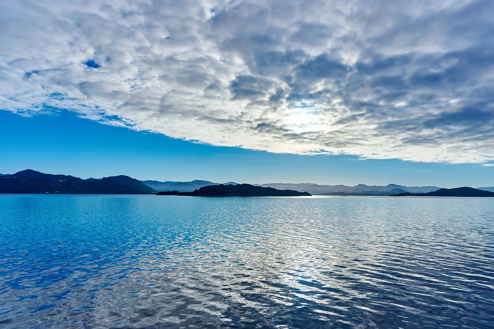

Startside B med ekte fotografi
To norske havbilder med fri lisens (Unsplash), prøvd i startside B. Bildene ligger i imports/, nedskalert og komprimert til WebP (183 og 270 KB). Kilder står i imports/KILDER.md.
1 · Nordsjøen ved Lindesnes
Åpent hav og en ren horisont under lett skydekke. Dempede gråblå toner som ligger nær palett A. Roligst.

Bestillingsforslag og meldinger
Hva som bør bestilles eller startes, og hva som krever oppmerksomhet.
Åpne →MRP-tabell
Beregningen uke for uke for én vare.
Åpne →BOM-tre
Produktstrukturen for testfartøyet, med ledetider og mengder.
Åpne →MPS og lager
Hovedplanen, lagerbeholdning og åpne ordre. Her gjør du endringer.
Åpne →Siste MRP-kjøring: i dag kl. 10:42. Resultatet ligger under Bestillingsforslag og meldinger.
Foto: Toria Tomlinson / Unsplash
2 · Havet ved Stavanger
Blankt vann med lysrefleks, kraftig skydekke og land i horisonten. Mer dramatisk, og sterkere blåfarger.

Bestillingsforslag og meldinger
Hva som bør bestilles eller startes, og hva som krever oppmerksomhet.
Åpne →MRP-tabell
Beregningen uke for uke for én vare.
Åpne →BOM-tre
Produktstrukturen for testfartøyet, med ledetider og mengder.
Åpne →MPS og lager
Hovedplanen, lagerbeholdning og åpne ordre. Her gjør du endringer.
Åpne →Siste MRP-kjøring: i dag kl. 10:42. Resultatet ligger under Bestillingsforslag og meldinger.
Foto: Oleksii Topolianskyi / Unsplash